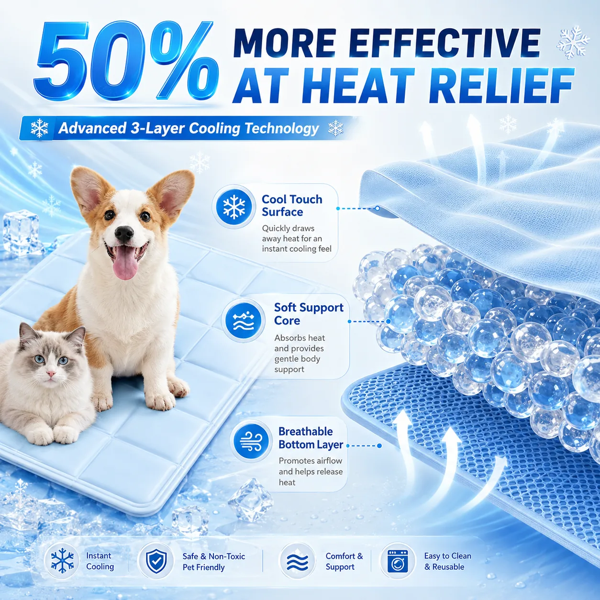

3-Layer Reusable PVC Pet Cooling Mat
A reusable three-layer cooling mat designed for cats and small dogs during warm-weather rest. Its compact format suits pet beds, floors, crates and travel.

Product Highlights
- Three-layer construction combines a cool-touch upper surface, soft support layer and breathable bottom layer.
- Reusable PVC surface is designed for easy daily wipe-clean care.
- Available in compact 40 x 40 cm and 45 x 45 cm sizes for cats and small dogs.
- Suitable for pet beds, indoor floors, crates, carriers and travel use.
- Custom colors, logos, labels and retail packaging are available for OEM and private-label programs.